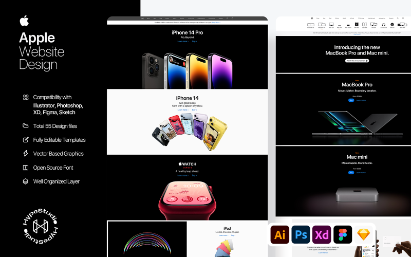

sites feito pro linguangens de programação
Desenvolvimento de websites

Apple
Para o desenvolvimento web, a Apple também tem uma forte presença, com ferramentas como o Safari, seu navegador próprio,
que foi otimizado para melhorar a experiência de navegação e interação com websites. As tecnologias da Apple, como WebKit (o motor de renderização usado no Safari),
desempenham um papel fundamental no desenvolvimento web, permitindo a criação de sites responsivos, rápidos e altamente interativos.
Além disso, a Apple facilita a integração entre seus dispositivos e a web com tecnologias como o HTML5, CSS3, JavaScript,
e também seus próprios frameworks, como o SwiftUI para interfaces nativas, que agora permitem aos desenvolvedores criar experiências web ainda mais integradas ao ecossistema Apple.
Com o tempo, a Apple continua a evoluir suas ferramentas e linguagens para acompanhar as tendências do mercado e as necessidades dos desenvolvedores.
Exemplo do site da Apple 
PlayStation
No que diz respeito às linguagens de programação, a PlayStation, como outras grandes empresas de tecnologia, utiliza HTML, CSS e JavaScript para criar sites dinâmicos e responsivos. A PlayStation também adota frameworks como React ou Angular em suas interfaces web, proporcionando uma experiência interativa e otimizada. Para o backend, a empresa pode usar Python, Java, ou Ruby, dependendo das necessidades dos seus serviços e plataformas online.
Além disso, a PlayStation se preocupa em garantir a integração dos seus jogos e serviços com a web, com a utilização de APIs (interfaces de programação de aplicativos) que conectam jogos a funcionalidades online, como troféus, rankings e interações sociais. Embora a empresa não seja tão focada em desenvolvimento web quanto outras, ela continua aprimorando suas plataformas online para oferecer aos jogadores uma experiência fluida e conectada.
Exemplo do site da PlayStation